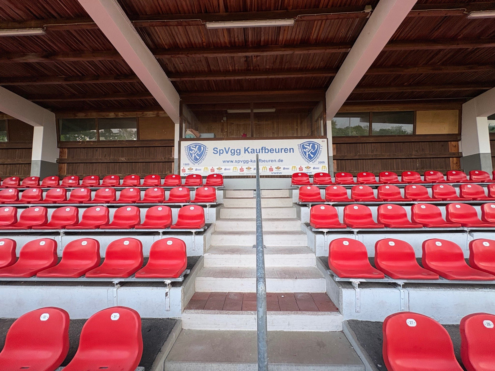

87600 Kaufbeuren

Heimat der SpVgg Kaufbeuren
Parkstadion Kaufbeuren
Zentrale Fußball- und Leichtathletikanlage am Jordanpark – Heimspielstätte der SVK und Treffpunkt für Sport in Kaufbeuren.
Auf einen Blick
Das Stadion
Das Parkstadion liegt zentral am Berliner Platz in unmittelbarer Nähe des Bahnhofs und des Jordanparks.
Hauptplatz mit umlaufender Laufbahn
Abendspiele sind grundsätzlich möglich
Öffentliche Quellen nennen unterschiedliche Werte
Mehr als ein Sportplatz
Ein zentraler Ort für Verein und Stadt
Das Parkstadion wird von der SpVgg Kaufbeuren für Heimspiele und Vereinsveranstaltungen genutzt. Gleichzeitig dient die Anlage auch dem Schul- und Breitensport.
Die zentrale Lage am Jordanpark, nahe Bahnhof und Innenstadt, macht das Stadion zu einem besonderen Bestandteil der Kaufbeurer Sportlandschaft.
2021 wurde öffentlich über eine mögliche Verlagerung des Stadions diskutiert. Vereine und zahlreiche Bürger betonten dabei die Bedeutung des Standorts für Sport, Jugend und Stadtleben.
Besuch im Parkstadion
Spieltagsinformationen
Kein Online-Ticketshop: Eintritt und Kasse werden veranstaltungsbezogen am Spieltag organisiert.
Anreise
Das Stadion ist durch seine zentrale Lage gut vom Bahnhof und aus der Innenstadt erreichbar.
Einlass & Kasse
Informationen zu Öffnung, Eintritt und möglichen Sonderregelungen gelten jeweils für den konkreten Spieltag.
Bewirtung
Ob und in welchem Umfang Bewirtung angeboten wird, richtet sich nach Spiel und Veranstaltung.
Barrierearmer Besuch
Bei besonderen Anforderungen empfiehlt sich vorab eine kurze Kontaktaufnahme mit dem Verein.
Anfahrt
Zentral in Kaufbeuren
Parkstadion Kaufbeuren
Berliner Platz 6
87600 Kaufbeuren
Der Bahnhof Kaufbeuren befindet sich in der Nähe. Die konkrete Parkplatzsituation kann je nach Veranstaltung variieren.
Hauptspielfeld
Haupttribüne
Kleine Tribüne
Einlass
Bahnhof
Innenstadt
Jordanpark
ESVK-Stadion
Stadion-Impressionen
Das Parkstadion aus verschiedenen Blickwinkeln
Alle Aufnahmen stammen aus dem aktuellen Bildbestand des Vereins.
Quellen & Transparenz
Öffentlich belegte Angaben
Die Stadiondaten beruhen auf Angaben des BFV, der Stadt Kaufbeuren, Europlan sowie regionalen Medien. Bei der Kapazität weichen öffentliche Quellen voneinander ab; deshalb wird eine transparente Spannweite angegeben.